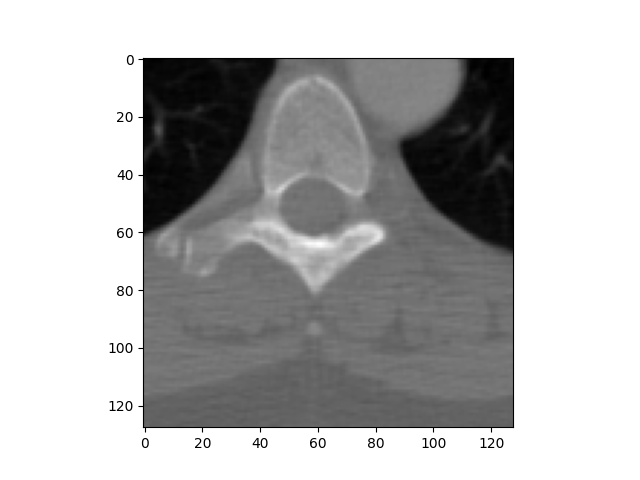

Note
Click here to download the full example code
Read DICOM and ploting using matplotlib¶
This example illustrates how to open a DICOM file, print some dataset information, and show it using matplotlib.
Out:
Filename.........: /home/circleci/project/pydicom/data/test_files/CT_small.dcm
Storage type.....: 1.2.840.10008.5.1.4.1.1.2
Patient's name...: CompressedSamples, CT1
Patient id.......: 1CT1
Modality.........: CT
Study Date.......: 20040119
Image size.......: 128 x 128, 32768 bytes
Pixel spacing....: [0.661468, 0.661468]
Slice location...: -77.2040634155
# authors : Guillaume Lemaitre <g.lemaitre58@gmail.com>
# license : MIT
import matplotlib.pyplot as plt
import pydicom
from pydicom.data import get_testdata_files
print(__doc__)
filename = get_testdata_files('CT_small.dcm')[0]
dataset = pydicom.dcmread(filename)
# Normal mode:
print()
print("Filename.........:", filename)
print("Storage type.....:", dataset.SOPClassUID)
print()
pat_name = dataset.PatientName
display_name = pat_name.family_name + ", " + pat_name.given_name
print("Patient's name...:", display_name)
print("Patient id.......:", dataset.PatientID)
print("Modality.........:", dataset.Modality)
print("Study Date.......:", dataset.StudyDate)
if 'PixelData' in dataset:
rows = int(dataset.Rows)
cols = int(dataset.Columns)
print("Image size.......: {rows:d} x {cols:d}, {size:d} bytes".format(
rows=rows, cols=cols, size=len(dataset.PixelData)))
if 'PixelSpacing' in dataset:
print("Pixel spacing....:", dataset.PixelSpacing)
# use .get() if not sure the item exists, and want a default value if missing
print("Slice location...:", dataset.get('SliceLocation', "(missing)"))
# plot the image using matplotlib
plt.imshow(dataset.pixel_array, cmap=plt.cm.bone)
plt.show()
Total running time of the script: ( 0 minutes 0.124 seconds)